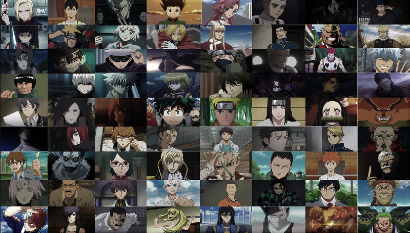

Streaming


News
All MCU movies & series ranked

MCU stands for Marvel Cinematic Universe. It is currently world's greatest and most successful cinematic universe. It is based on Marvel commics. 25 movies and 4 TV series have been released since 2008. These movies are completely watchable for all age. If your age is more than 10, you can watch these movies. These movies are the best movies for teenagers in the world. Usually, 2 or 3 movies of MCU releases per year. So, we can say this universe is extending day by day. If you are a marvel commics lover, then what are you waiting for. You should watch this movies as soon as you can. There is not a single MCU movie which is not good, some are maybe not as good as expacted but some are mind blowing. So, let's see which movies have won everyone's mind and which have not.
Review of all Harry Potter movies

Some people think Harry Potter franchise is only for kids. The First movie is maybe. But, the rest are not. I think in every Harry Potter movie (except the first two) there was always a deep meaning, and a kid will definitely not understand that. Harry Potter franchise has begun at 2001 with Harry Potter & The Philosopher's Stone movie and in 2011 this franchise's last movie Harry Potter & The Deathly Hallows Part-2 have released.I think, this fancise is now world's best cinematic franchise after Marvel Cinematic Universe. It's hard to find a person who is a lover of hollywood movie but still have not watched Harry Potter. Every movie of Harry Potter are full of adventure, thrilling, mistery and supernatural power & 8 movies of Harry Potter are directed by only 4 directors. So, it's almost impossible to rank them from best to worst. So, I gave review of all Harry Potter movie but have not said which one is best and which is worst. So, Let's get started.
Review of all Netflix Marvel shows

MCU stands for Marvel Cinematic Universe. It is currently world's greatest and most successful cinematic universe. It is based on Marvel commics. 25 movies and 4 TV series have been released since 2008. These movies are completely watchable for all age. If your age is more than 10, you can watch these movies. These movies are the best movies for teenagers in the world. Usually, 2 or 3 movies of MCU releases per year. So, we can say this universe is extending day by day. If you are a marvel commics lover, then what are you waiting for. You should watch this movies as soon as you can. There is not a single MCU movie which is not good, some are maybe not as good as expacted but some are mind blowing. So, let's see which movies have won everyone's mind and which have not.
Best DC live action movies

MCU stands for Marvel Cinematic Universe. It is currently world's greatest and most successful cinematic universe. It is based on Marvel commics. 25 movies and 4 TV series have been released since 2008. These movies are completely watchable for all age. If your age is more than 10, you can watch these movies. These movies are the best movies for teenagers in the world. Usually, 2 or 3 movies of MCU releases per year. So, we can say this universe is extending day by day. If you are a marvel commics lover, then what are you waiting for. You should watch this movies as soon as you can. There is not a single MCU movie which is not good, some are maybe not as good as expacted but some are mind blowing. So, let's see which movies have won everyone's mind and which have not.
Strongest 30 Naruto Character

Naruto franchise is one of the most viewed anime in the history. This anime was in top 10 for more than 15 years. There is more than 100 important character in this anime of 720 episodes. From them, some characters are legendary and some of them are very disgusting. Some of them are incredibly sgrong and some are very weak. But, this all characters are what which have made Naruto a very successful anime.
Strongest to weakest MCU hero in infinity saga

Naruto franchise is one of the most viewed anime in the history. This anime was in top 10 for more than 15 years. There is more than 100 important character in this anime of 720 episodes. From them, some characters are legendary and some of them are very disgusting. Some of them are incredibly sgrong and some are very weak. But, this all characters are what which have made Naruto a very successful anime.
Vote for the best anime character

Naruto franchise is one of the most viewed anime in the history. This anime was in top 10 for more than 15 years. There is more than 100 important character in this anime of 720 episodes. From them, some characters are legendary and some of them are very disgusting. Some of them are incredibly sgrong and some are very weak. But, this all characters are what which have made Naruto a very successful anime.